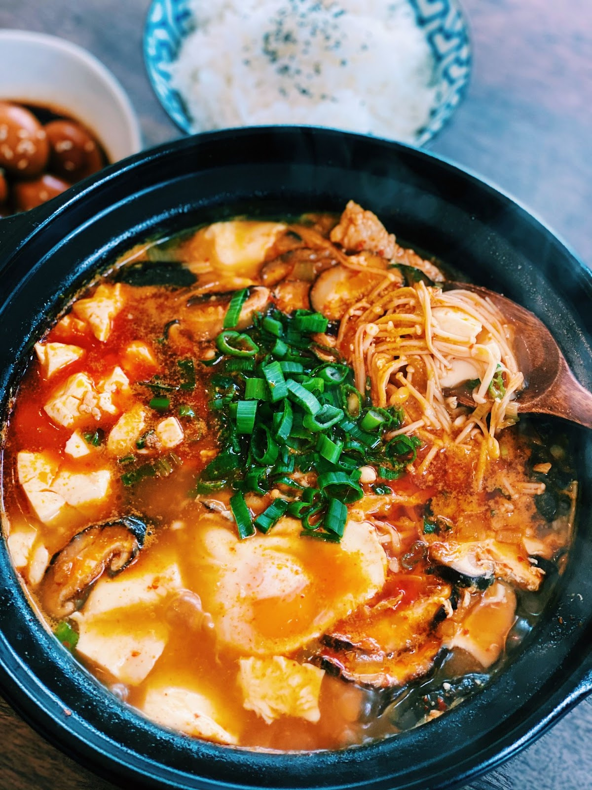

Sundubu Jjigae

Description
One of my favorite places to eat in San Diego is called Tofu House, and
they serve the best Sundubu Jjigae. I seriously think about it all the
time, but I live pretty far from the restaurant. This is my attempt to
make it at home.
Ingredients
- 1 package silken tofu
- 1 tbs gochugaru
- 1 zuchinni (cubed)
- 1/2 small white onion (diced)
- 1/4 cup sliced green onion
- 1 handful mushrooms (choppoed)
- 1 tbs avocado oil
- 1 tbs soy sauce
- 1 tbs fish oil
- 3 cloves garlic (crushed)
Steps
-
To a pot over medium-high heat, add white parts of green onion along
with the white onion. Saute until fragrant.
-
Add soy sauce, fish oil, gochugaru, and garlic. Saute for about a
minute, then add 2 cups water.
-
Bring to a boil, then add zuchinni and mushrooms. Lower to a simmer, and
add silken tofu. Simmer for 5 minutes, or until the veggies are tender.
-
Leave in the pot or pour into a bowl and serve with your favorite rice.